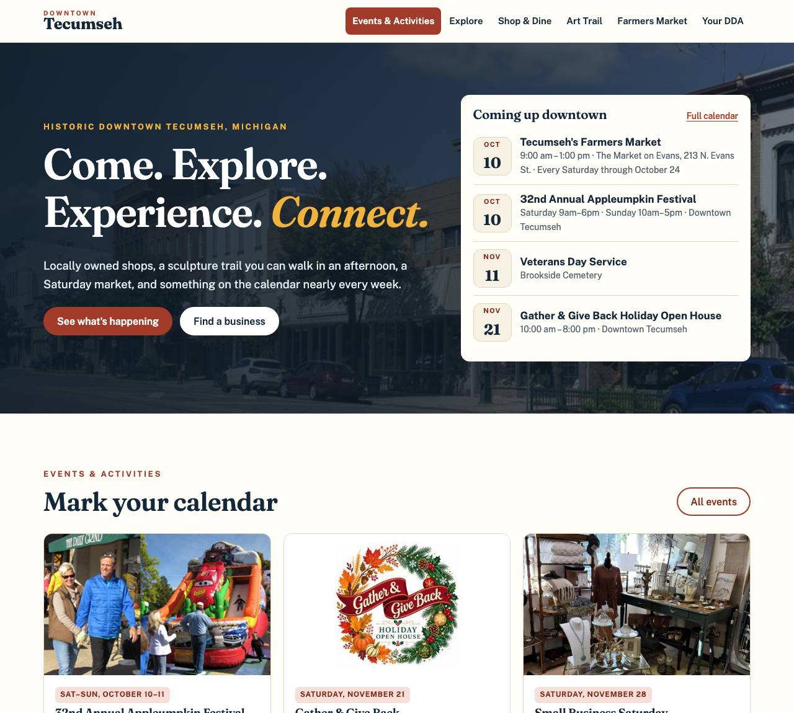
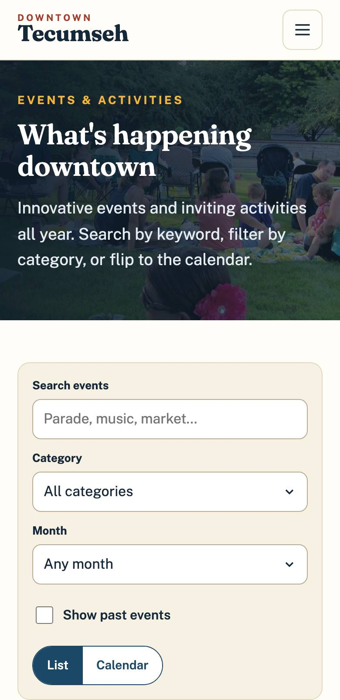

Submitted to the City of Tecumseh Downtown Development Authority, Attention: City Clerk, 309 E. Chicago Boulevard, Tecumseh, MI 49286.
Year 1 total: $18,000. A cost breakdown is included with this submittal.
October date, 2026
Kelly Jo Gilmore, Economic Development Director
Tecumseh Downtown Development Authority
Dear Ms. Gilmore and members of the DDA Board,
Your RFP says the new site should make it immediately apparent that Downtown Tecumseh is a place to come, explore, experience and connect, and that staff should be able to keep it current without calling a developer. Instead of describing how we would do that, we built it so you can judge it yourselves.
The concept at williamsdigital.io/preview/downtown-tecumseh/ is a working site, not a picture of one. It was built from what the DDA has already published:
Three things about the current site shaped the design. Events are a secondary page and the full-year schedule is a PDF. Each business's own page has no title or description for search engines to read, so those pages are hard to find in Google. And the Art Trail, with its sculptures, artists and prices, lives in a brochure PDF that a phone cannot search or map.
We want to be direct about who we are. Williams Digital is a small studio in Birmingham, Alabama. Dylan Williams designs and builds every site and remains the support contact after launch. We are not a Michigan firm and we have not built a site for a Downtown Development Authority before. Our comparable work is a community association site that staff run themselves, a business directory with search and an approval queue, and a media platform with a newsroom its own staff write and publish in. The work would be done remotely, with scheduled video meetings and recorded training, and the price reflects a studio without agency overhead.
The site would be built on WordPress with a custom theme the DDA owns outright, with no page builder and no proprietary platform. If you ever change vendors, the site moves with you.
Thank you for considering this proposal. We would welcome the chance to present the concept to the Board.
Sincerely,
Dylan Williams
Owner, Williams Digital
Dylan@williamsdigital.io · 205-789-1211
Williams Digital is a web design and development studio based in Birmingham, Alabama, owned and operated by Dylan Williams. Add: year founded and business structure (LLC / sole proprietor).
Dylan Williams is an Alabama-based developer, Auburn University Computer Science Engineering graduate, and technology professional with more than 10 years of experience supporting large-scale productions, digital platforms, and user experiences.
Our sites are hand-coded, mobile-first and light. Staff edit labeled fields ("Event date," "Business hours," "Sculpture artist") and the layout holds, so a site still looks designed two years after launch.
| Role | Who |
|---|---|
| Project manager | Dylan Williams. One point of contact from kickoff through ongoing support. |
| Designer and developer | Dylan Williams. The person who designs the pages also builds them and trains staff. |
| Content and migration | Dylan Williams, working from the DDA's approved content. Rewriting is done with staff and approved by staff. |
A one-person team is a real consideration and we would rather name it than hide it. It is why this proposal uses WordPress, documents everything, and puts all accounts in the City's name: the DDA would never depend on us to keep its site running.
| Vestlake Communities at Liberty Park | Buy Auburn | Legacy Sports Media | |
|---|---|---|---|
| Organization type | Residential community association (Vestavia Hills, AL) | Business network and directory (Auburn, AL) | Media organization covering Alabama high school athletics |
| Why it is comparable | Events and calendar. Staff-managed events, newsletters, documents and resident resources. | Searchable directory. Filters by state, city and industry, a "near me" view, and business profiles. | Staff-managed content. Nontechnical staff write and publish their own stories. |
| Scope | Public website with events, featured events, a newsletter archive, governing documents, forms and contact information. Two management staff post their own content. | Public directory, an online application for businesses, and an admin dashboard where the client approves or rejects listings. | Public site with stories, scores, schools and galleries, plus a staff newsroom for writing and publishing. |
| Website | vestlakelibertypark.com | buyauburn.com | legacysportshq.com |
| Services provided | Design, development, content setup, staff accounts and training, domain setup | Design, development, payments, email notifications, admin dashboard | Design, development, data import, staff accounts and training |
| CMS / platform | Custom staff admin on a hosted database | Custom admin dashboard on a hosted database | Custom content system |
| Launch date | August 2026 | April 2026 | July 2026 |
| Ongoing services | Hosting, domain, support | Hosting and monthly platform support | Hosting and support |
| Reference | Name, title, email, phone (confirm permission first) | Name, title, email, phone (confirm permission first) | Name, title, email, phone (confirm permission first) |
These three ran on custom admin tools because that suited each client. For the DDA we recommend WordPress instead, because the RFP's priority is avoiding vendor lock-in. More work: williamsdigital.io/portfolio/
| Phase | What happens | What the DDA receives |
|---|---|---|
| 1. Discovery and strategy | Kickoff with staff. Review of the existing analytics. Page-by-page content inventory. Short conversations with staff, two or three downtown business owners, and an event organizer. | Findings memo, content inventory, confirmed requirements |
| 2. Design | The concept is revised with what discovery taught us. Homepage and interior pages are designed for a phone first, then widened for desktop. | Working design on a private link, for approval |
| 3. Development | WordPress theme, events calendar, business directory, Art Trail map, Farmers Market pages, DDA project updates, forms. | Staging site staff can log into |
| 4. Content migration | Approved content, images and PDFs moved over. Outdated pages retired. Every old address redirected. | Complete staging site and a redirect map |
| 5. Testing | Phones, tablets and desktop browsers. Accessibility, forms, links, search, events, directory and speed. | Written test and accessibility report |
| 6. Training and launch | Live training, recorded. Written guide. Launch, then 60 days of close monitoring. | Live site, recordings, staff guide |
| 7. Hosting and support | Hosting, updates, backups, monitoring, accessibility checks and an annual review. | A site that stays healthy |
We would not copy the current menu. The structure would come from evidence, in this order:
This follows the RFP's starting structure with one change: "Shop & Dine" and "Business Directory" become one destination, because visitors looking for lunch and visitors looking for an accountant use the same search.
| Main menu | Contains |
|---|---|
| Events & Activities | List and calendar views, filters, event pages, annual events, submit an event |
| Explore | Things to do, arts and culture, parks and trails, Fairy Door Adventure, Social District, winter fun, lodging, beyond downtown |
| Shop & Dine | The business directory: search, categories, map, business profiles, new businesses |
| Art Trail | Interactive map, sculpture and artist profiles, purchase information, printable guide, murals |
| Farmers Market | Schedule, location, vendors, vendor application, announcements, FAQs, renting The Market on Evans |
| Your DDA | Projects and status updates, Streetscape Master Plan, grants and programs, Board, meetings, news, open a business, contact |
| Always visible | Search, directions and parking, visitor packet request, newsletter signup |
williamsdigital.io/preview/downtown-tecumseh/


| The RFP asks for | Where to see it |
|---|---|
| Prominent Events & Activities | "Coming up downtown" sits in the first screen of the homepage. Events is the first menu item and the only one in color. |
| Quality-of-life experiences | "More than a place to shop": Art Trail, market, fairy doors, concerts, trails and the river, the Social District, winter. |
| Business discovery | A search box on the homepage, featured businesses, and a directory with categories and a map. |
| Art Trail and Farmers Market visibility | Each has a menu item, a homepage feature and its own page. The market shows whether it is open today. |
| DDA projects and communications | "Your DDA at work" on the homepage, with a status bar for each project, and a full page behind it. |
| Mobile-first thinking | Open it on a phone. Every page was tested at iPhone and Android sizes with no sideways scrolling. |
| Clear paths for each audience | "What brings you downtown?" offers four doors: Come, Explore, Experience, Connect. |
The concept was created independently from public information, with no obligation to the DDA. It is unlisted and hidden from search engines. Photographs are from downtowntecumseh.com. The status shown for the Streetscape Master Plan and the numbers on the dashboard's Reports tab are samples and are labeled as such.
WordPress is open source and free to license. It is widely used by municipal and Main Street organizations, so a future staff member or vendor is likely to know it already. That is the strongest protection against vendor lock-in available.
We would not use a page builder. Staff would see plain forms: an event has a name, dates, a time, a place, a category, a photo and a description. A business has hours, a logo and a map pin. Staff fill in the fields and the design takes care of itself. This is the experience shown in the dashboard demo.
| CMS requirement | How it is met |
|---|---|
| Multiple users and permissions | Administrator (full access), Editor (all content), and a limited Contributor role whose changes wait for approval. Each person has their own login. |
| Events | Create, duplicate, edit, remove. Recurring events are entered once. Expired events leave the public pages automatically and remain in an archive. |
| Business directory | Add, edit, deactivate, feature, and post a temporary notice. An optional public form lets owners send updates that staff approve. |
| Homepage features | Staff choose the featured events, featured businesses, seasonal campaign and site-wide banner. |
| Images and documents | Media library with required alternative text for images. |
| Forms | Contact, visitor packet, vendor application, event and business submissions, routed to the right inbox. |
| SEO controls | Page title and description on every page, written automatically and editable. |
| Backups and recovery | Daily off-site backups kept 30 days. Every page keeps its revision history, so a mistake is one click to undo. |
| Analytics access | The DDA's existing Google Analytics property, plus a plain dashboard summary for staff. |
Any WordPress host or developer can take the site over. At the end of the contract, or at any time on request, we would deliver a complete copy of the site files and database and the documentation, and assist the new host or firm with the move. Cost: $0 for the export and up to two hours of handoff help. Further assistance is billed at the hourly rate.
Standard: WCAG 2.1 Level AA, the standard named in the U.S. Department of Justice's 2024 rule for state and local government websites.
Testing: automated scans (axe and WAVE) on every template, then manual checks with a keyboard only and with a screen reader (VoiceOver), plus color contrast measurement and 200% zoom. The DDA receives a written report before launch.
Responsibilities: we are responsible for the templates, navigation, forms, maps and color. DDA staff are responsible for the content they add afterward: alternative text, headings, link text and accessible PDFs. Training covers each of these, the CMS prompts for alternative text, and the support plan includes a scan every quarter.
Assumes award on November 12, 2026. Launch is set for the week of May 10, 2027, ahead of the spring Art Trail installation and the opening of the Farmers Market season.
| Milestone | Proposed date | DDA's part |
|---|---|---|
| Contract award / kickoff | Week of Nov 16, 2026 | Kickoff meeting. Access to analytics and the current site. |
| Discovery & strategy | Nov 16 – Dec 11 | Staff conversations. Introductions to two or three businesses. |
| Sitemap / information architecture | Approved by Dec 18 | One review round, five business days. |
| Design approval | Jan 4 – Feb 5, 2027 | Two review rounds, five business days each. |
| Development | Feb 8 – Mar 26 | Progress check every two weeks. |
| Content migration | Mar 15 – Apr 16 | Mark each page keep, rewrite or retire. Supply new photos and 2027 dates. |
| Testing | Apr 19 – Apr 30 | Staff walkthrough on their own phones. |
| Staff training | May 3 – May 7 | Two sessions of about an hour. |
| Launch | Week of May 10, 2027 | Final sign-off. |
| Post-launch support | 60 days, through mid-July | Report anything that feels wrong. Fixes are included. |
| Item | What is included |
|---|---|
| Hosting | Managed WordPress hosting in the City's name. SSL certificate. Storage and bandwidth well beyond the current site's needs, stated in writing at contract. 99.9% uptime target. |
| Security and maintenance | WordPress and plugin updates applied monthly, security patches within 48 hours. Daily off-site backups. Uptime and security monitoring. A full restore within one business day. |
| Technical support | Email and phone support, answered within one business day. Emergencies (site down, hacked, or a wrong event date on a festival weekend) answered the same day, weekends included. One hour of small changes each month. A quarterly accessibility scan. An annual website review with the Board. |
| Beyond the plan | New features and design changes at $95 per hour, quoted and approved in writing before work starts. |
A fixed price for the full scope of the RFP. Recurring costs are separated from one-time costs as the RFP requires.
| Service | One-time cost | Annual cost |
|---|---|---|
| Discovery & Strategy | $1,400 | $0 |
| Website Design | $3,200 | $0 |
| Website Development | $3,600 | $0 |
| CMS Implementation / Licensing | $1,200 | $0 |
| Content Migration | $1,300 | $0 |
| Business Directory | $1,500 | $0 |
| Event Calendar / Management | $1,400 | $0 |
| Forms / Integrations | $700 | $0 |
| SEO Setup | $600 | $0 |
| Accessibility Testing | $700 | $0 |
| Analytics Setup | $400 | $0 |
| Staff Training | $500 | $0 |
| Hosting | $0 | $480 |
| Security / Maintenance | $0 | $540 |
| Technical Support | $0 | $480 |
| Other: Art Trail interactive map (included in Website Development) | $0 | $0 |
| TOTAL | $16,500 | $1,500 |
Year 1 total: $18,000. Each year after: $1,500.
Payment schedule: 30% at signing, 40% at design approval, 30% at launch. Annual costs begin at launch.
Hourly rate for work outside this scope: $95 per hour.
| Item | Detail | Cost to the DDA |
|---|---|---|
| WordPress | Open source. No license fee. | $0 |
| Theme | Custom, owned by the DDA. No license fee. | $0 |
| Plugins | Free, open-source plugins only (forms, SEO, backups, security). No paid plugin is required. | $0 |
| Maps | OpenStreetMap. No license fee and no usage billing. | $0 |
| Analytics | The DDA's existing Google Analytics property. | $0 |
| Hosting | Managed WordPress hosting. Included in the annual cost above. | Included |
| Domain name | downtowntecumseh.com stays registered with the City. Renewal remains the City's cost. | No change |
| Facebook and Instagram | Links and share buttons have no cost. Embedded feeds use free tools. | $0 |
| Service | Detail | Cost |
|---|---|---|
| Business-owner self-service | Owners log in to update their own hours, photos and notices. Staff approve each change. | $1,200 one-time |
| Visitor itinerary tool | Visitors save events, shops and Art Trail stops into a day plan they can share. | $1,500 one-time |
| Email newsletter integration | Signup forms connected to the DDA's newsletter service, with a template that pulls upcoming events. | $400 one-time |
| Quarterly analytics report and strategy call | A two-page report with recommendations, four times a year. | $600 per year |
| Ongoing content management | We enter events and updates for staff. Two hours a month. | $150 per month |
| Copywriting | Rewriting of pages beyond the migration plan. | $95 per hour |
| On-site visit | In-person training or Board presentation in Tecumseh. | Travel at cost |